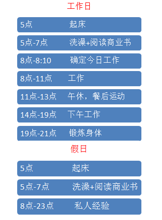
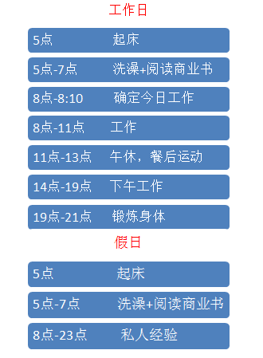

时间分配要点：
1.时间分配三类——自我提升、工作时间、生活时间（吃饭，睡觉）、私人时间（娱乐，聚会等）
2.时间分配表主要安排的是前3类时间，其中要吧每天的时间留出25%以备不时之需。
PS：推荐使用google日历制作平时的时间管理表
如果想成功，必须重视时间的价值！
时间管理表范例

时间分配要点：
1.时间分配三类——自我提升、工作时间、生活时间（吃饭，睡觉）、私人时间（娱乐，聚会等）
2.时间分配表主要安排的是前3类时间，其中要吧每天的时间留出25%以备不时之需。
PS：推荐使用google日历制作平时的时间管理表